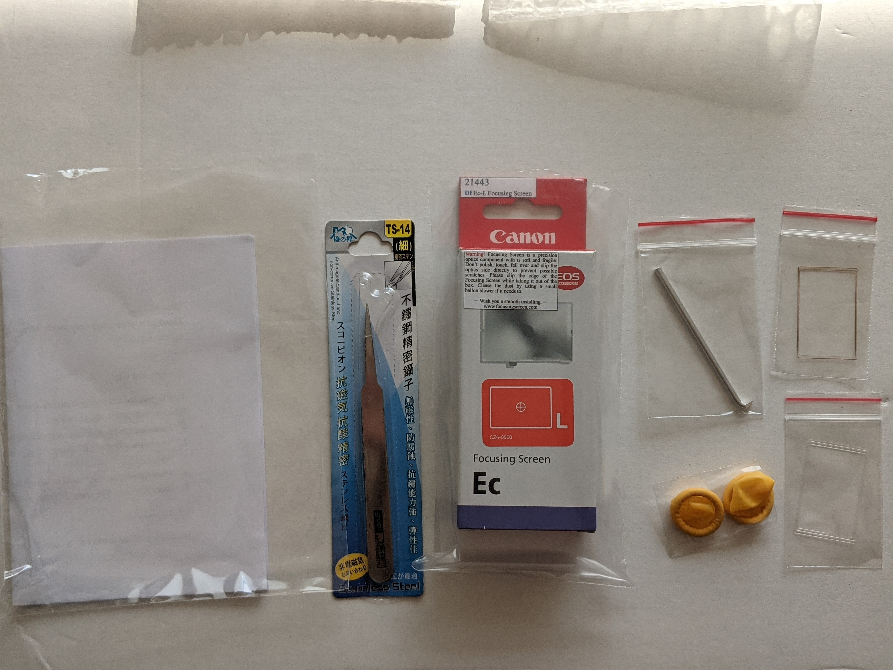
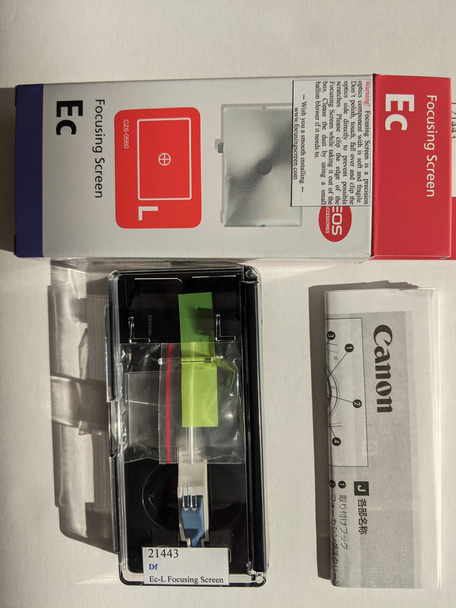
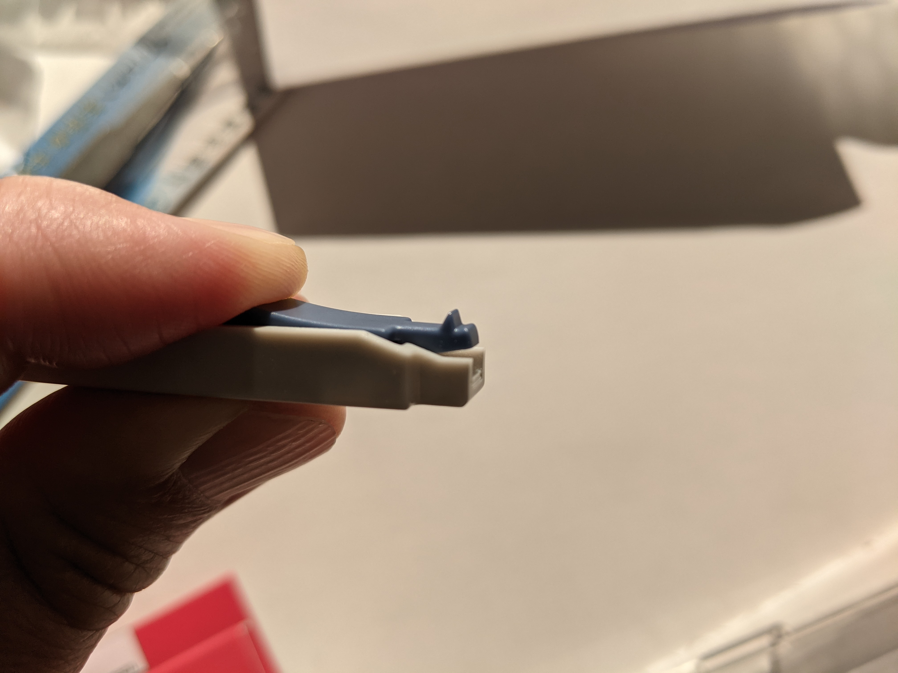
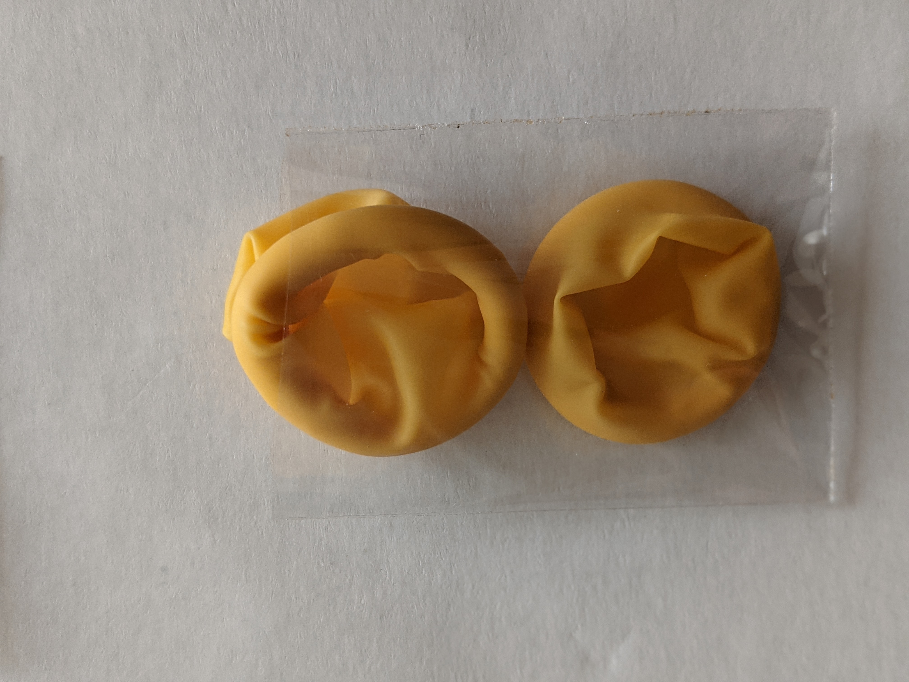
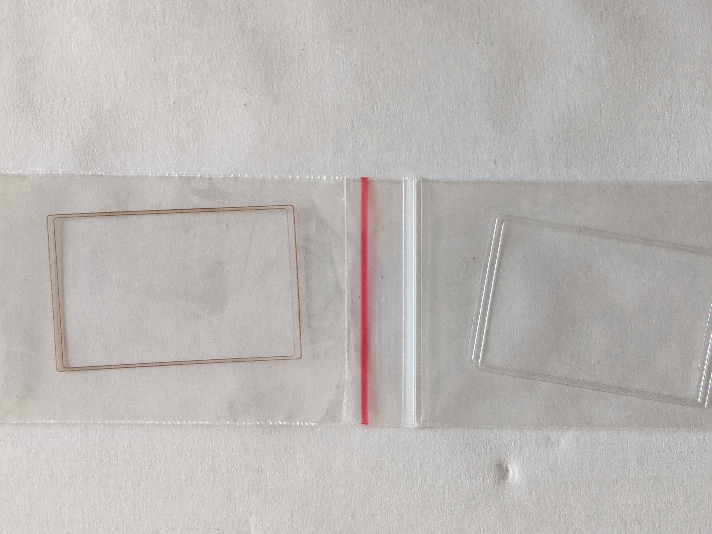

I recently got a DF, and put a split screen in it. I'm not a handy man. I was very hesitant about this, but really wanted to give this a shot for my manual lenses. So if you are also hesitating, and need some positive feedback, read on.
Started with this detailed blog. I ordered mine from
focusingscreen. The website is old fashioned, but serves the
purpose. I guess it's such a niche that the owner has no incentive to
upgrade it. Using US credit card leads you to another web page, which
I guess is a 3rd party service. So the experience was jumping from
main site → payment site → main site. The convention wisdom
is, don't use browser's BACK button in this process! Just let it
go through. If you stuck, you can always cancel the order w/ the
vendor (it's a slow order, so you get time), and through your credit
card company. I actually had doubt whether my payment went
through. For that, you could check the My Account tab, which shows
payment success. You could further check your CC's that there is a
payment pending w/ the amount you intended.
what you get

I ordered it on 7/24, arrived 8/19. Be patient. In between I had many times swing back and forth of actually changing the screen.
- What if I scratch either screen?
- What if I smear it w/ finger print?
- What if I have focus issue afterward? back/front focus? what else?
- What if it's not centered, and I'm super OCD?
- There is a DPreview post, in which the guy basically saying "dont do it" cause you are going inevitably ruin both screens, and ended up with a handicapped camera.
The agony goes on and on. Then just before I started to wonder maybe it's lost in mail and saved me from agonizing, it's here!
- Package itself is low key. Just another international mail.
-
Inside you have the followings. I'm copying & pasting from a sheet included in the package which has a "Material list" section:
- Focusing screen and original packing box
- Tweezers: Picking focusing screen's edge or mount tab to exchange.
- Fingerstall
- Transparent pad: It's used to adjust focus.
- Special tools: For some difficult installation, special tools can help to unlock.
- Everything is wrapped in a clear plastic wrap, then a bubble wrap.
camera position
In his blog, shots are showing the camera in normal position. You can tell by the aperture contact on the top of the screen mount. When I was doing it, mine was upside down — it sits on the flash mount side, because the screen will not fall out if I disengage the metal clip which holds it down.
Note: the camera won't sit by itself. I had left hand holding it in that position. You could use some help or whatever to achieve this. The idea is the same. It doesn't need to be 90 degree straight as long as the screen won't just fall out by gravity.
This is important because it will then give me the chance to pause and think about how to remove it. After all, I'm new to this like anyone! Be slow an cautious.
the screen

The screen sits inside the Canon box. As mentioned in other places, this screen is essentially a Canon screen w/ some customization to fit DF size. The entire package was mint! I don't know how they could have done this without leaving even a finger print or crumpling some paper packaging material. Well done!
The screen sits inside a plastic box in the package as if it were originally made by Canon! Everything is mint!

There is a small plastic tool in the box w/ the screen. It seems to be for grabbing the tab of the screen. But it's difficult to use. I tried to use it to grab the DF screen out. But it's too clumsy to be useful. I would not recommend using it.
The screen has two sides, one matte, one glossy. The original screen has glossy side facing down if installed. So is the new one. The easiest way to remember this is that the tab is on your right-hand side if it's installed, the camera is upstraight, and you are looking at the camera through the lens mount. When I was installing it, my camera was upside-down (sitting on its flash mount), thus the tab is on the left-hand side. With this as additional reference, you simply will not install it in the wrong way. This is like computer, parts can only be installed into the slot in one way due to the design. Same principle applies here. This was a major concern to me. So if this is also yours, rest assured.
special tool

In the instruction it's called "special tool". In practice, this is the tool you want to use! Notice the tiny lip at the end? It's perfect to push onto the metal wire clip to release the screen! I say push because, again, my camera is upside down. Actually I found pushing motion gives you more control over how much force you apply, and sense how tightly the wire clip is being latched.
My biggest fear was if the tool slips, then scratch my screen. So first of all, make sure the tool is about 90 degree to the wire. You don't want to push side ways. Then, feel how well the lip is against the wire. I put it onto the wire a couple times just to get a feel, like stepping on the gas pedal of a new car. On my 3rd try, the wire just popped open!!
Honestly I wasn't even ready for it! I felt the wire was not even latched properly to begin with!! WTF!? But anyway. No more hesitation. The show is on!
rubber finger condom

I don't know what it's called. It's just like condom. I decided to put them on my left hand index finger and thumb, because I'm going to use them to grab the screen, which in the end was exactly how I did it.
I deliberately left my right hand bare, so it's the tool hand. I decided that I will not use it touch the screen unless it's an emergency, which, if happened, is pretty much a mission failed.
how to remove the screen
As mentioned, I tried that plastic tool first. It's too big for the lens mount space, and the tab is on my left hand side, so using the right hand to use this tool makes even harder. After maybe 2 tries I just give it all up.
With the wire clip unlatched, the screen is about to fall if you tilt the camera. I wanted to have some control of this process. So first thing I did was to use a tweezer to hold the wire so that it will not let the screen completely out-of-control. I didn't use tweezer to grab the screen because tweezer is metal, and I didn't want to scratch the screen.
Now with tweezer controls the clip like a door, I could have some breathing time to see how to grab the screen. In the end, I just used the two fingers w/ condom to grab the screen, and off it's out! My heart was pounding like hell at this moment.
Then, I looked at the two sides of the screen, and note which side facing which direction. As said before, the glossy side facing down after installed (when camera in normal position), and the matte size is facing the viewfinder.
install new screen
New screen has matte and glossy sides, also. I then further confirmed the direction by the tab's position. Then, still using the condom fingers to grab the screen, I just drop it in. By gravity, it sits right into the housing. I tilted the camera side ways, but didn't see any give. So the screen has been cut-to-size, and there is no room to play! This is good.
Put the wire back
Getting the wire back was a bit more than I expected. Using the same special tool, pushing onto the wire, but this time having a bit downward motion so it will go under the plastic latch clip. I didn't want to put too much force onto the wire fearing it will fail or the tool slip. So it took me 4-5 tries before it went it. The last one I had to put on a bit of force, so be aware. As before, make sure the tool is 90 degrees more-or-less to the wire, so it will not slip.
I was hoping to hear a "clicking" sound as proof, but I didn't. I could, however, feel the engagement through the tool, like a tiny vibration. So trust your finger and sense.
shims

No idea. I didn't play with the shims. I have no heart to do this again. It front-focus a bit. But hell, I will just develop muscle memory to shift a tiny bit when the split says perfect, then I'm dead on. This is much easier than playing with the shims. So no idea why there are two types of shims — one transparent plastic, one with brown rim. Different thickness? Well well, I'm leaving them alone.
afterthought
It works very well! I'm not totally old school, but I enjoy this additional assistance. I actually don't know what's the trick of using split screen when I'm shooting things that are not at the center. But well well, DF now feels the way it should be by design.
I highly recommend this vendor if you are thinking to try out a split screen on whichever digital camera you have. It's professional, well made, and worth a shot.
— by Feng Xia